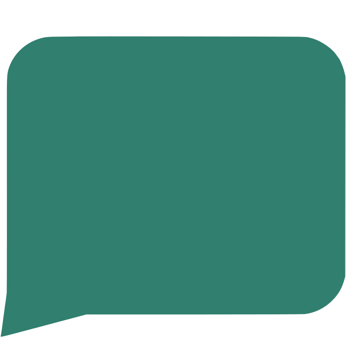

Files & Sync
Nextcloud
Planned private file storage, synchronization, sharing, calendars, contacts, and browser-based productivity.
PlannedGoreeCloud is a self-hosted personal and family cloud designed to keep files, memories, media, records, credentials, knowledge, and application data under the control of the people they belong to.
Personal & family services
GoreeCloud combines established open-source services with GoreeCloud-maintained and GoreeCloud-native applications. Public descriptions stay high level; private service addresses, internal topology, and administrative interfaces are intentionally not published here.
Files & Sync
Planned private file storage, synchronization, sharing, calendars, contacts, and browser-based productivity.
PlannedPhotos & Memories
Planned long-term preservation, organization, search, and private sharing for family photos and videos.
PlannedVideo & Media
Planned private streaming for personally owned movies, television, home videos, and family media.
PlannedMusic
Planned private access to an owned music library without depending on a commercial streaming catalog.
PlannedAudiobooks
Planned audiobook and podcast library management across approved family devices.
PlannedDocuments & Records
Planned document ingestion, classification, search, and preservation for important records.
PlannedPasswords & Secrets
Secure password, credential, recovery-information, and sensitive-account-data management.
Available NowQuick Notes
A GoreeCloud-maintained Memos fork for fast private note capture with a GoreeCloud-native interface and long-term customization path.
Release CandidateMessaging
Planned private family messaging through self-hosted Matrix infrastructure with individual identities and controlled access.
PlannedAvailability labels describe current GoreeCloud status, not upstream project maturity. Planned services are not presented as production workloads until their infrastructure, access controls, monitoring, backup, and recovery paths are implemented and validated.
How GoreeCloud works
GoreeCloud separates access, applications, storage, security, and recovery so no single product becomes the platform itself. Technologies can be replaced while ownership, portability, and preservation remain constant.
Approved users and devices receive only the connectivity required for their role.
Self-hosted and GoreeCloud-built applications serve family, knowledge, and operational needs.
Important information remains organized, portable, and under direct GoreeCloud control.
Least privilege and workload separation reduce unnecessary access and blast radius.
Independent recovery layers protect information from failures, mistakes, and migrations.
Platform foundation
The current VPS foundation and planned local Proxmox environment use separate technologies for virtualization, Linux, containers, private networking, DNS, HTTPS, monitoring, notifications, backup, and private search.
Virtualization
Planned bare-metal virtualization for locally owned GoreeCloud servers and clearly separated workload roles.
Role: Virtual machines, workload separation, and host resource control.
Linux
The current server operating system and preferred Linux base for future GoreeCloud virtual machines.
Role: Stable, lightweight, maintainable Linux foundation.
Containers
Portable, reproducible application and infrastructure deployments with clear data and network boundaries.
Role: Container runtime and service deployment.
Private Networking
Fully self-hosted encrypted private networking for approved users, devices, servers, and future virtual machines.
Role: Private connectivity, device identity, and access policy.
DNS
Client-facing DNS filtering, policy enforcement, and private GoreeCloud hostname resolution.
Role: DNS filtering and private DNS policy.
HTTPS Gateway
Controlled HTTPS publication, TLS termination, certificate management, and reverse-proxy routing.
Role: HTTPS, TLS, and approved web routing.

ActiveNotifications
Self-hosted operational alert delivery to approved web and mobile clients.
Role: Centralized infrastructure notifications.
Monitoring
System and container visibility for the current GoreeCloud server foundation.
Role: Resource and host-health visibility.
Availability
Availability checks for approved GoreeCloud applications and infrastructure endpoints.
Role: Service uptime and endpoint monitoring.
Private Search
Privately administered metasearch for reduced dependence on a single commercial search provider.
Role: Private metasearch and future local-AI research foundation.
Current → target: GoreeCloud currently operates a VPS-centered foundation. The long-term direction moves primary workloads to locally owned Proxmox hosts while preserving portability, private access, monitoring, controlled DNS and HTTPS, and independent recovery.
Third-party logos identify their respective technologies and remain the property of their respective owners. This is a representative public foundation, not a complete infrastructure inventory.
Software & development
I use mature open-source software where it already solves the problem well, maintain GoreeCloud-specific forks when customization is justified, and build original applications when GoreeCloud needs a purpose-built product.
Glaze UI is GoreeCloud's shared visual and interaction language: Material-style structure, fluid layered depth, one-hand-friendly ergonomics, strong accessibility, light and dark themes, and a distinctly GoreeCloud identity.
Open source first. Fork when justified. Build original software when GoreeCloud itself requires a distinct product.
Expanding the platform
The target home architecture adds dedicated workload boundaries for family services, infrastructure, storage, home automation, physical security, artificial intelligence, and backup so each role can be secured, scaled, maintained, and recovered independently.
Home Automation
Dedicated household automation and orchestration for approved smart devices, scenes, dashboards, alerts, and future voice or AI integrations.
Target: A dedicated Home Assistant OS virtual machine in the local Proxmox environment.
Physical Security
Local video-surveillance and object-detection platform with deliberately restricted access to camera feeds, recordings, and administration.
Target: A dedicated Security VM separated from family, infrastructure, and AI workloads.
Local Intelligence
Private model execution and knowledge workflows built around Ollama, Open WebUI, AnythingLLM, and controlled internet research through SearXNG.
Target: A dedicated AI Services VM with local inference and GoreeCloud-owned knowledge workflows.
Status note: Planned capabilities are not represented as active until deployment, security, monitoring, backup, and recovery validation are complete.
What is GoreeCloud?
GoreeCloud is a privacy-first, self-hosted personal and family cloud platform built to preserve a family's digital life over the long term.
Success is not measured by keeping one server or application forever. It is measured by whether the information entrusted to GoreeCloud remains accessible, understandable, recoverable, portable, and under the control of its rightful owner as technology changes.
The GoreeCloud story
GoreeCloud started in 2026 as a self-hosting plan and quickly grew into a governed personal cloud, software portfolio, and long-term digital preservation platform.
The first planning work starts with a goal of replacing subscription dependence with greater privacy, control, and data ownership.
GoreeCloud becomes the name for the complete ecosystem: hardware, software, infrastructure, services, configurations, and data.
The domain becomes the public identity for the platform and its future applications.
Glaze UI becomes the shared design language while Research Library, Manager, Notes, Tasks, Contacts, and Bookmarks define a growing GoreeCloud software layer.
The project continues toward locally owned infrastructure with defined governance, recovery requirements, software standards, and long-term family continuity.
Follow the build
Follow progress, demonstrations, lessons learned, privacy discussions, open-source development, and self-hosting content across GoreeCloud's public accounts.
Contact GoreeCloud
Reach GoreeCloud directly at goreecloud@gmail.com.